Hematology and Urinalysis
血液・一般検査部門では、血液や尿を調べることで、体の健康状態やさまざまな病気の兆候を確認しています。 血液検査では血液中の細胞の数や形を、一般検査では尿の性状や成分などを詳しく調べ、診断や治療に必要な情報を提供しています。 安心して医療を受けていただけるよう、正確で迅速な検査を心がけています。
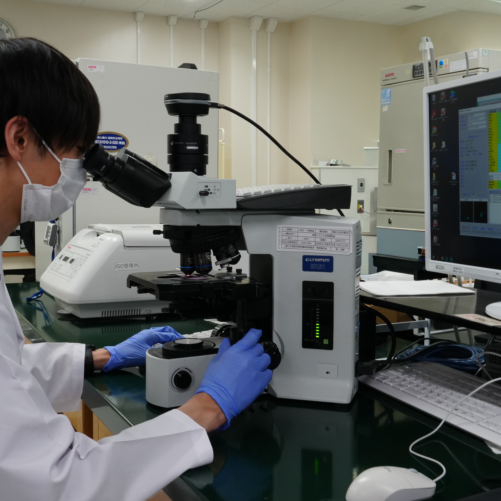
血液検査では、自動分析装置を用いて赤血球・白血球・血小板などの数や性状を測定し、貧血や感染症、炎症性疾患などの評価を行っています。 また、血液像検査では、臨床検査技師が顕微鏡を用いて血球の形態や成熟度、異常細胞の有無を詳細に観察し、血液疾患の診断や病態把握に役立てています。 検査データと形態学的所見を総合的に評価することで、迅速かつ精度の高い検査情報を提供し、適切な診療支援に努めています。
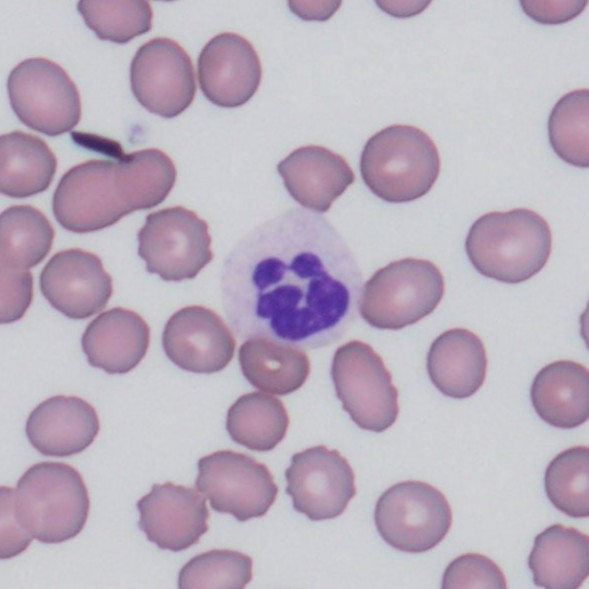
細菌感染などで増加する白血球です。
生体防御に重要な役割を担っています。
成人：38～74％
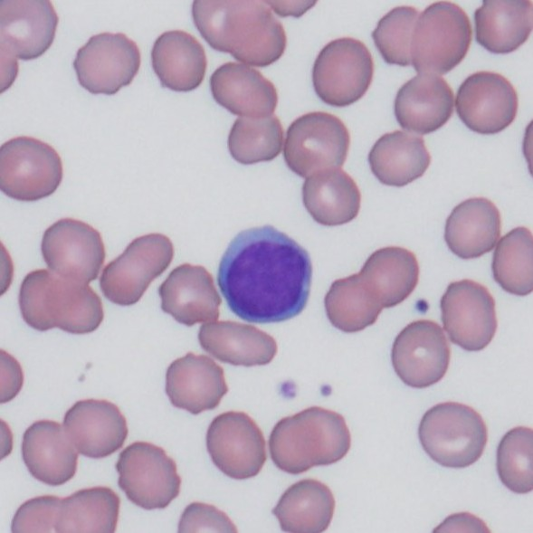
免疫機能に関わる細胞で、
ウイルス感染などで変化がみられます。
成人：16～50％
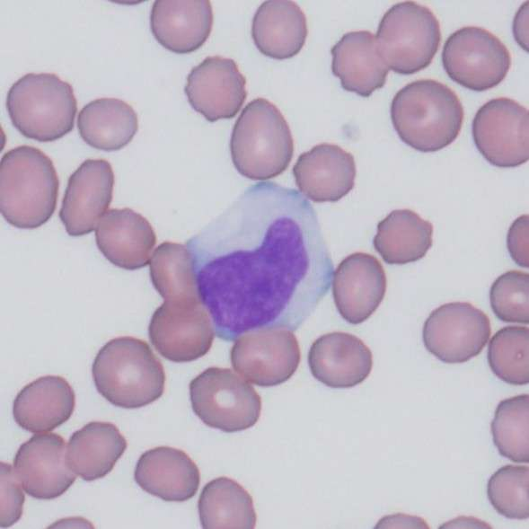
体内に侵入した異物や細菌を取り込み、
処理する働きを持つ白血球です。
炎症や感染症などで増加することがあります。
成人：2～10％
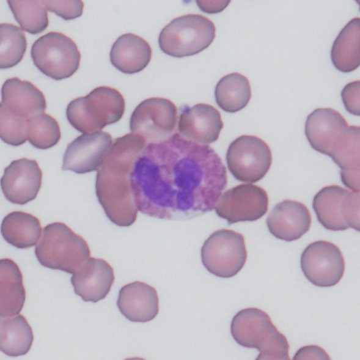
アレルギー反応や寄生虫感染などに関わる白血球です。
気管支喘息やアレルギー疾患で増加することがあります。
成人：0～9％
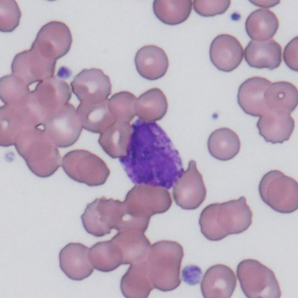
アレルギー反応に関与する白血球の一種です。
ヒスタミンなどの物質を放出し、
炎症反応に関わっています。
成人：0～3％
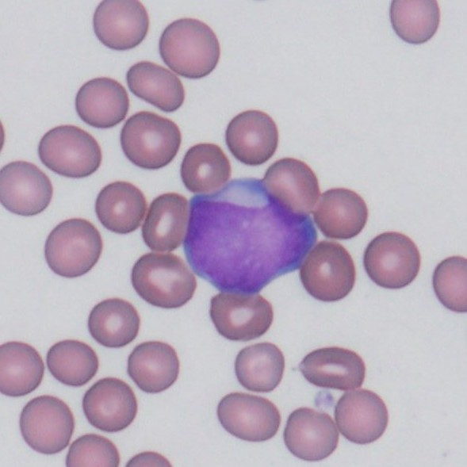
幼若な血液細胞です。 白血病などで出現することがあります。
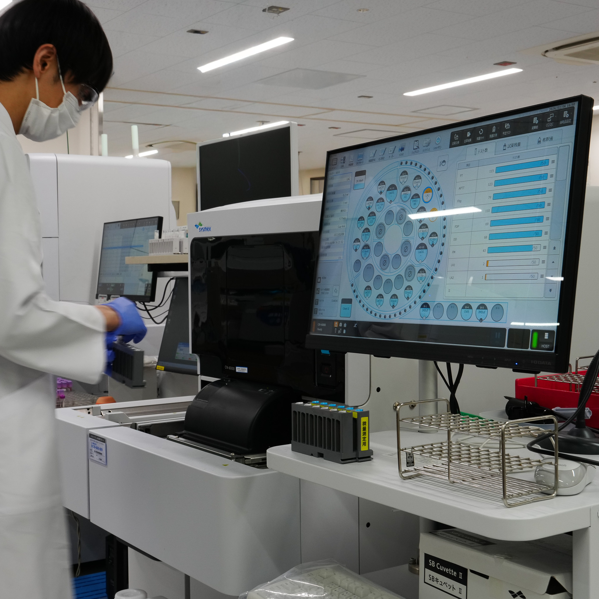
止血検査では、プロトロンビン時間（PT）、活性化部分トロンボプラスチン時間（APTT）、フィブリノーゲン、FDP、Dダイマーなどを測定し、出血性疾患や血栓性疾患の診断、ならびに抗凝固療法・線溶療法のモニタリングを行っています。
また、各種凝固因子活性測定に加え、クロスミキシング試験を実施し、凝固因子欠乏とインヒビターの鑑別評価にも対応しています。
さらに、血小板凝集能検査では、血小板凝集能を評価し、血小板機能異常症の診断や病態把握に役立てています。
専門性の高い止血・凝固検査を通して、迅速かつ精度の高い検査情報の提供に努めています。
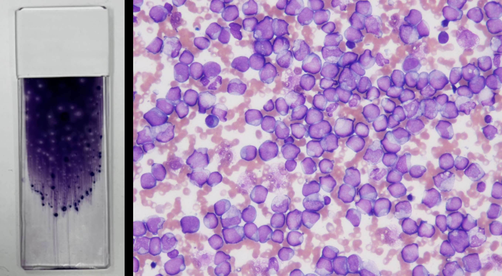
骨髄検査では、骨髄穿刺により採取された骨髄液を用いて標本を作製し、臨床検査技師が顕微鏡による形態学的観察を行っています。 赤血球・白血球・血小板を産生する骨髄の状態を詳細に評価することで、白血病や悪性リンパ腫、多発性骨髄腫などの血液疾患の診断や治療効果判定、経過観察に役立てています。
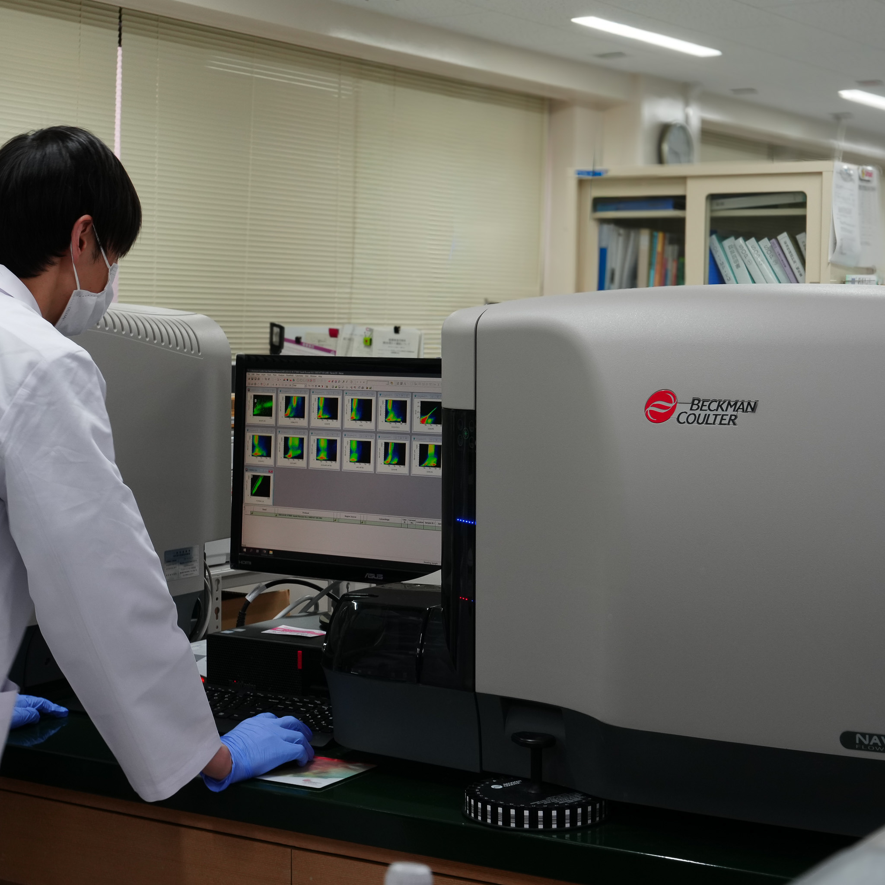
フローサイトメトリー検査では、細胞表面抗原や細胞内抗原を解析し、異常細胞の性状や成熟段階を評価しています。当部門では、最大10カラーによるマルチカラー解析を導入しており、より詳細かつ高精度な免疫学的解析を実施しています。形態学的所見と免疫学的解析を組み合わせることで、専門性の高い血液疾患診療を支援しています。
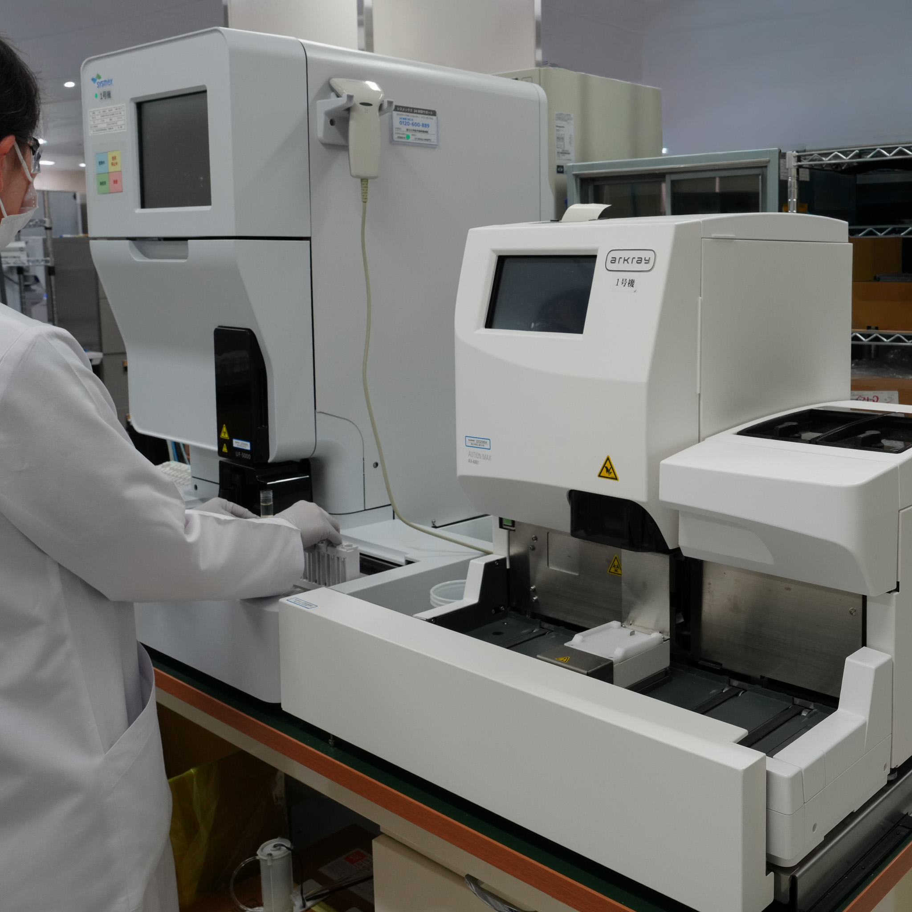
一般定性検査では、主に尿を用いて蛋白、糖、潜血、白血球などの項目を測定し、腎・尿路系疾患や糖尿病などのスクリーニングを行っています。
迅速に体の異常を把握できる検査として、日常診療や健康状態の評価に広く活用されています。
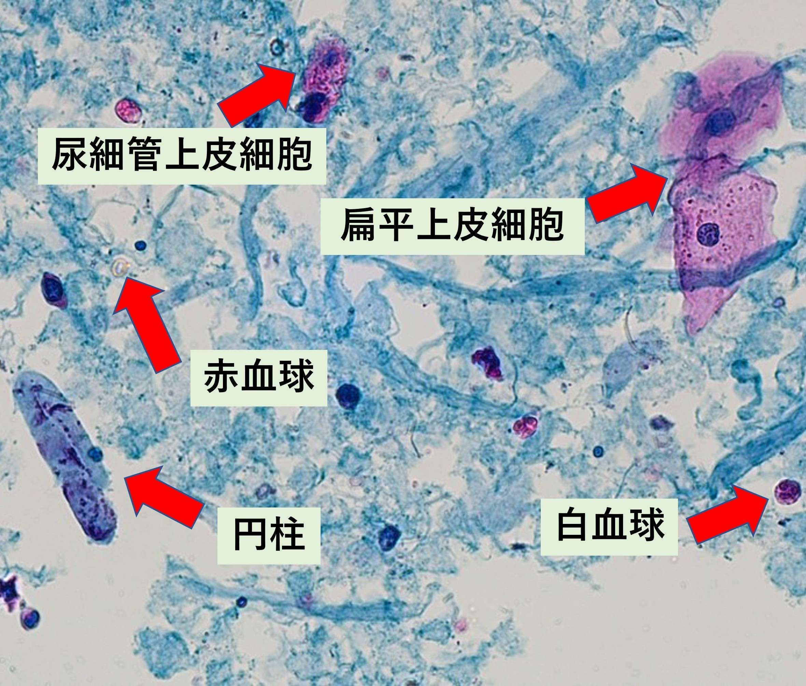
尿沈渣検査では、尿中に含まれる赤血球、白血球、上皮細胞、円柱、結晶などの有形成分を顕微鏡で詳細に観察しています。
これらの所見から、腎疾患や尿路感染症などの病態を評価し、診断や治療方針の決定に役立つ情報を提供しています。